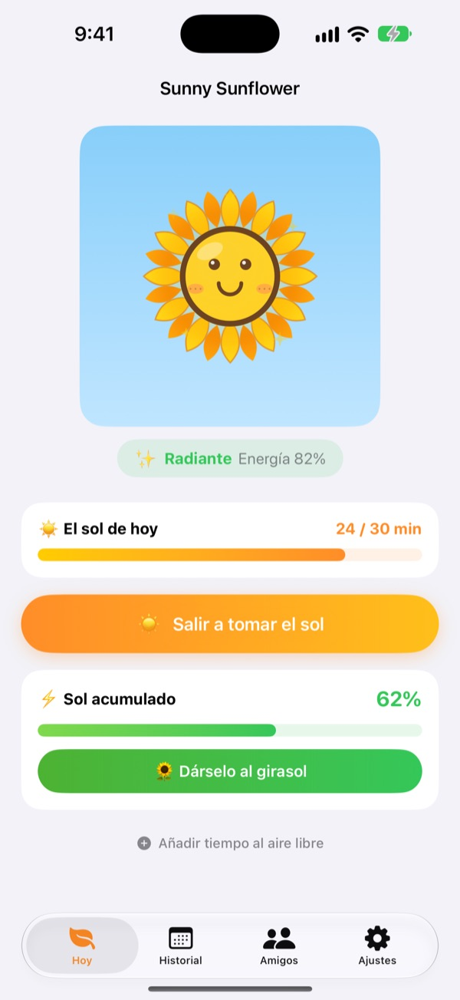
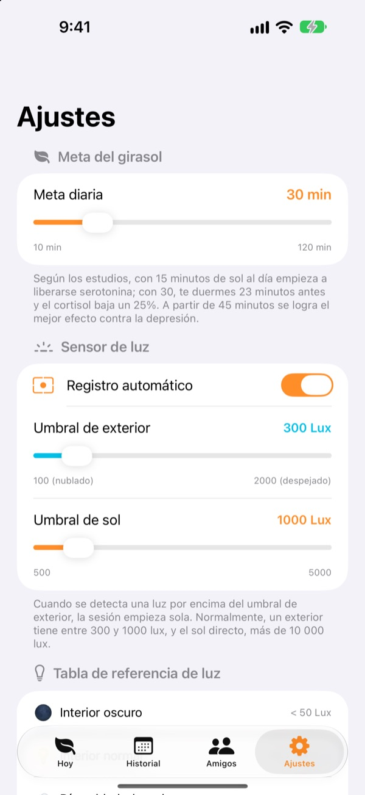
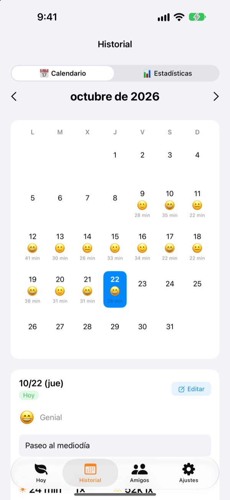
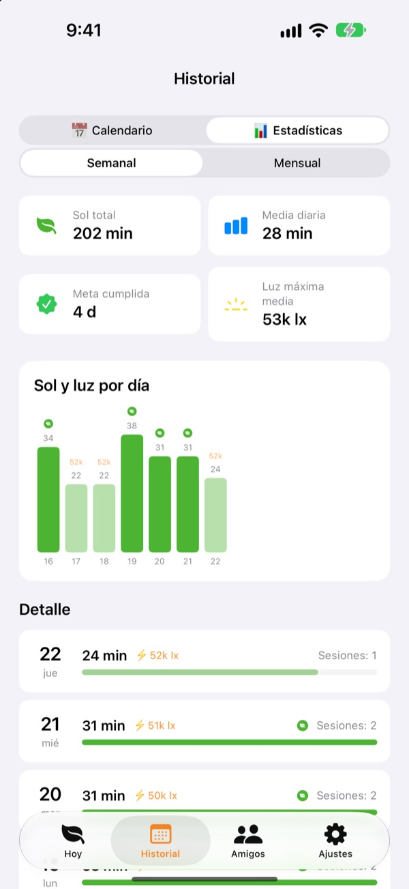

Cultiva un girasol
con el sol de hoy
En cuanto sales, tu tiempo al sol se va sumando solo. Dale al girasol el sol que acumulas y estará radiante. Si lo olvidas unos días, empieza a marchitarse.
Todas las funciones son gratis. Tus registros se quedan en tu dispositivo.

Acumula un poco de sol
Elige cuánta luz hay y durante cuánto tiempo, toma el sol y dáselo a un girasol que ya empieza a decaer.
¿Cuántos minutos de sol has tomado hoy?
Unos pasos camino del trabajo, una escapada rápida a comer. Si pasas el día dentro, solo te das cuenta por la noche de que apenas viste la luz del día. Sunny Sunflower convierte tu tiempo al aire libre en números, y tu girasol te espera para el paseo de mañana.
Sal y mide por sí sola
Toca Salir a tomar el sol y sal a la calle. La app calcula la luz a tu alrededor con los datos de exposición de la cámara frontal. Cuando la luz se mantiene como en exterior unos 30 segundos, empieza el registro. Nunca hace ni guarda fotos.
Después, el sensor se enciende solo 20 segundos cada 2 minutos para ahorrar batería.

Sol y ánimo, día a día
En el calendario, cada día guarda su tiempo al sol, un emoji de ánimo y una nota breve. ¿Estuviste fuera sin registrarlo? Con Añadir tiempo al aire libre sumas entre 5 y 120 minutos.

Tu semana y tu mes de un vistazo
Las estadísticas semanales y mensuales muestran qué días cumpliste la meta y tu media de sol. Fija una meta diaria de 10 a 120 minutos y mira en la pantalla principal cuánto te falta hoy.
Los widgets de la pantalla de inicio y de bloqueo, y la Dynamic Island, muestran el sol de hoy y cómo está tu girasol.

Empieza en tres pasos
- 1
Fija tu meta diaria
Empieza en 30 minutos. En Ajustes puedes ponerla entre 10 y 120.
- 2
Sal al sol
Toca
Salir a tomar el soly sal con la app abierta. Solo te pide acceso a la cámara una vez. - 3
Alimenta al girasol
Toca
Dárselo al girasolpara convertir el sol acumulado en energía.
Cómo la luz se convierte en sol
- Menos de 300 lux
- Luz tenue: no cuenta como tiempo al sol
- De 300 a 1.000 lux
- Exterior/nublado: entre un 1 y un 3 % cada 10 minutos
- De 1.000 a 10.000 lux
- Sol: entre un 3 y un 33 % cada 10 minutos
- Desde 10.000 lux
- Sol fuerte: más de un 33 % cada 10 minutos
- Sol acumulado
- minutos × lux medios ÷ 3.000 (hasta un 100 % por sesión)
- Energía del girasol
- baja un 2,5 % por hora, un 60 % al día aprox.
En Ajustes puedes poner el umbral de exterior entre 100 y 2.000 lux. Por defecto son 300 lux.
Preguntas frecuentes
¿Cómo mide el sol?
Calcula la luz a tu alrededor (iluminancia) con los datos de exposición de la cámara frontal. Cuando la luz se mantiene como en exterior un rato, el registro empieza solo. No hace ni guarda fotos.
¿Gasta mucha batería mientras mide?
Una vez confirmado el sol, el sensor no se queda encendido: se activa unos 20 segundos cada 2 minutos para volver a medir y el resto lo cuenta un temporizador.
Mi girasol se marchita todo el rato.
El girasol pierde un 2,5 % de energía cada hora. Acumula sol y toca Dárselo al girasol. En un día despejado, de 15 a 20 minutos a pleno sol bastan para reponer lo que pierde en un día.
Estuve fuera y no se registró nada.
Usa Añadir tiempo al aire libre, al final de la pantalla principal, para sumar de 5 a 120 minutos. Si en días nublados le cuesta empezar, baja el umbral de exterior en Ajustes.
¿Cómo funciona lo de los amigos?
Si tú y un amigo estáis cerca (a unos 10 m) y los dos estáis midiendo el sol, os conectáis solos. Con alguien nuevo primero hay que confirmar que tomáis el sol juntos; después es automático. Los pétalos se tiñen de colores y en 3 días vuelven a su color, y vuestro tiempo juntos queda en la pestaña de amigos. Los dos necesitáis la app y permitir el acceso a Bluetooth y a la red local.
¿De verdad es gratis?
Sí. Sin anuncios ni compras, con todas las funciones. Si te gusta puedes dejar una propina en la app, pero no desbloquea nada extra.
¿Puedo hacer copia de seguridad o pasar mis registros a otro iPhone?
Todo se guarda en tu dispositivo, sin servidores, y se conservan los últimos 90 días. No hay exportación aparte, pero tus registros van incluidos en la copia de seguridad normal del iPhone en iCloud o en el ordenador.
¿Cómo borro todos mis datos?
En los ajustes de la app, toca Restablecer datos, o elimina la app. No se puede deshacer.
¿Dónde informo de un error?
Escríbenos al correo de abajo o abre una incidencia en GitHub (github.com/M1zz/SunlightTracker/issues). Ayuda mucho indicar el modelo del dispositivo, la versión de iOS y qué pasó. Solemos responder en pocos días.
¿Dudas o sugerencias? Escríbenos a leeo@kakao.com.